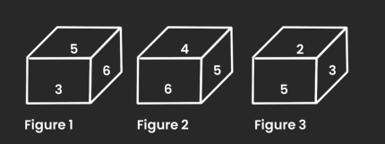
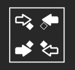
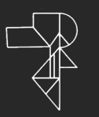
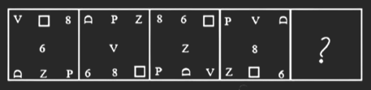

Select the set in which the numbers are related in the same way as are the numbers of the following sets.
(49, 63, 441)
(7, 14, 14)
Which two signs should be interchanged to make the given equation correct?
60 x 4 + 9 ÷ 3 – 8 = 34
Which of the following numbers will replace the question mark (?) in the given series?
15, ?, 27, 39, 55, 75
In a certain code language, 'MANAGE' is written as 'HJDQDP' and 'LITTLE' is written as 'HOWWLO'. How will 'POLICY' be written in that language?
Select the option that is related to the third word in the same way as the second word is related to the first word. (The words must be considered as meaningful English words and must NOT be related to each other based on the number of letters/number of consonants/vowels in the word) Ophthalmology : Eyes Dermatology?
Select the set in which the numbers are related in the same way as the numbers of the given sets.
(4,6,8)
(6,8,10)
Select the option that is related to the third word in the same way as the second word is related to the first word. (The words must be considered as meaningful English words and must not be related to each other based on the number of letters/number of consonants/vowels in the word.)
Tortoise : Hatchling :: Rabbit : ?
Select the set in which the numbers are related in the same way as are the numbers of the following sets.
(15,20,4)
(30, 30, 3)
In a certain code, POETRY is written as QONDSQX and OVER is written as PNUDQ. How is MORE written in that code language?
‘P @ Q' means 'P is the wife of Q’.
P # Q' means 'P is the brother of Q'.
'P $ Q' means 'P is the father of Q’.
‘P - Q' means 'P is the daughter of Q’.
If Z - B $ D $ G, then how is Z related to G
The second number in the given number pairs is obtained by performing certain mathematical operation(s) on the first number. The same operation(s) are followed in all the number pairs, EXCEPT one. Find that odd number pair.
Three of the following four letter-clusters are alike in a certain way and one is different. Pick the odd one out.
Select the option that represents the correct order of the given words as they would appear in an English dictionary.
1. Tertiary
2. Terrace
3. Terrain
4. Termite
5. Territory
6. Terminate
Select the combination of letters that when sequentially placed in the blanks of the given series will complete the series.
A _ M P S A C _ P S A C O _ S A C P P _
Which of the following terms will replace the question mark (?) in the given series? OTLN, MSJM, KRHL, IQFK, ?
Which two signs should be interchanged to make the given equation correct?
117 ÷ 13 + 16 x 540 - 40 = 644
Three different positions of the same dice are shown. Find the number on the face opposite the face showing ‘5’.

Which of the answer figures is the exact mirror image of the given problem figure when the mirror is held at the right side?
Problem figure:

Select the Veen diagram that best illustration the relationship between the following classes.
Women, Professor, Players
Select the option figure which is embedded in the given figure (rotation is NOT allowed)

Select the figure that will replace the question mark (?) in the following figure series.

Select the figure among the given options that can replace the question mark (?) in the following series.
Find the Missing Number
? 9 16 51 200 1005
Find the Missing Term :
23 12 13 21 44 ?
Find the Missing Term :
12 7 9 21 88 ?
Statement: India cricket team is is performing very well. Particularly the batting line-up is the best in the world.
Courses of action:
1. There should be least changes in the present team.
2. The Indian cricket board should take an action to improve the bowling standard.
Statement: “Look at his audacity. Rohan has not replied to my letter” - A tells B.
Assumptions:
1. Rohan received his letter.
2. Rohan did not receive his letter.
3. The letter was sent only by post.
Statement: A major retail store announced thirty percent reduction on all food items during the weekend.
Assumption
I. People may still prefer buying food items from other stores.
II. A large number of customers may visit the retail store and buy food items.
Statement : The state government has abolished the scheme of Providing concessional air ticket to students.
Assumptions :
I. Students will not travel by air in future.
II. The students who resort so travel by air can bear the expenses of air ticket.